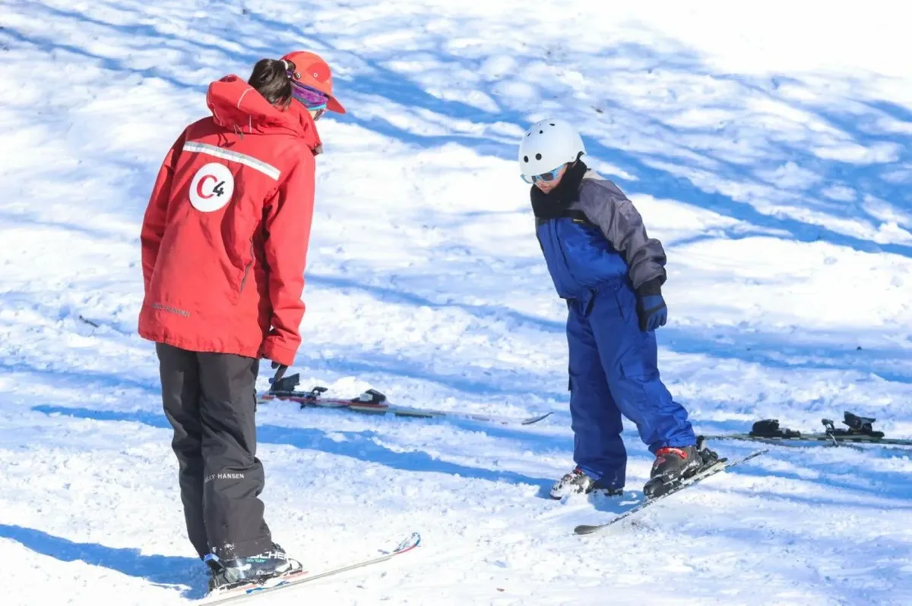
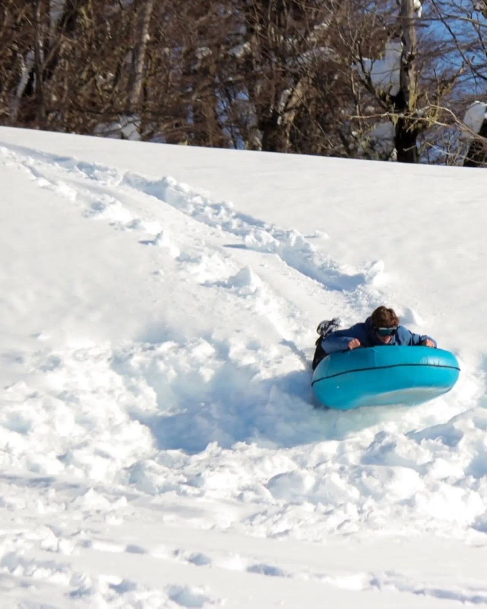
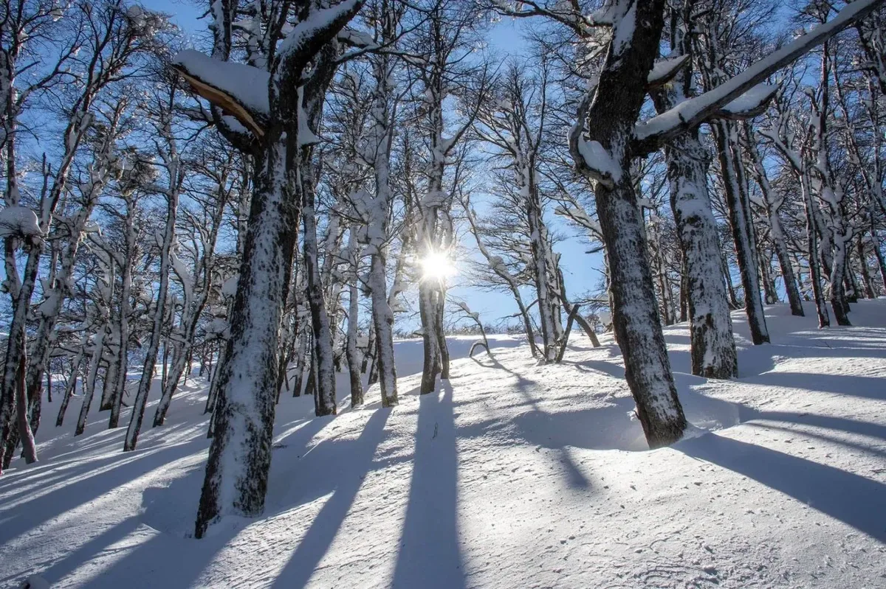
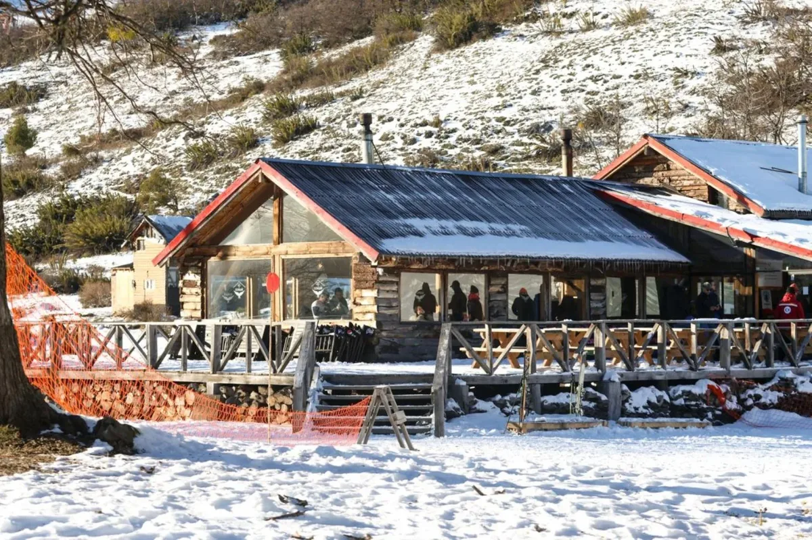
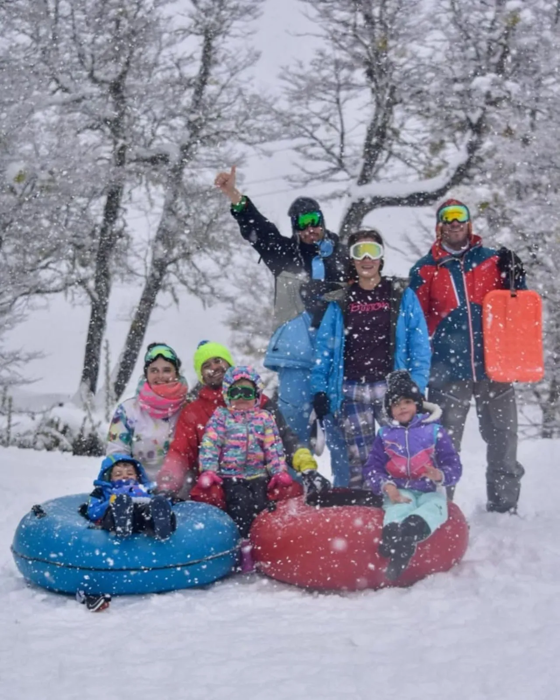

C4 Parque de Nieve: uma joia escondida para aprender a esquiar em 2026
A 600 metros da base do Chapelco, o parque de neve C4 é o segredo mais bem guardado de San Martín de los Andes para os primeiros passos no esqui ou no snowboard: descidas suaves, instrutores dedicados só a iniciantes, snow tubing para as crianças e um refúgio de madeira com chocolate quente — sem as multidões nem os preços da estação grande.

Aprender a esquiar tem um inimigo silencioso: o primeiro dia. Todo inverno, milhares de pessoas sobem o Cerro Chapelco decididas a experimentar pela primeira vez — e encontram pistas lotadas, esquiadores experientes passando em alta velocidade do lado, aluguéis esgotados e preços de estação internacional. Muitos voltam para casa sem vontade de tentar de novo. O que quase ninguém sabe é que 600 metros antes de chegar à base, na mesma Rota Provincial 19, existe um lugar desenhado exatamente para que esse primeiro dia dê certo.
O C4 Parque de Nieve é o primeiro parque de inverno de San Martín de los Andes, na Patagônia argentina, voltado exclusivamente para iniciantes. Aqui ninguém desce em alta velocidade: o parque inteiro foi pensado para quem calça os esquis pela primeira vez. Fica ao pé do Cerro C4, dentro do território da comunidade mapuche Curruhuinca, em pleno Parque Nacional Lanín, e em 2026 encara sua sexta temporada — seis invernos consecutivos fazendo uma única coisa: ensinar a esquiar.
Por que é a melhor opção para começar
Quem aprende numa estação de esqui grande paga duas vezes: o passe diário (que aproveita pela metade, porque o iniciante passa o dia na pista de iniciação) e a aula à parte. No C4 a lógica é inversa — a aula inclui o acesso à pista e todo o ambiente joga a favor de quem está começando:
| O problema do primeiro dia | Como o C4 resolve |
|---|---|
| Medo das descidas e da velocidade | Pistas suaves desenhadas para iniciação, sem esquiadores experientes cruzando |
| Pagar passe de estação grande para usar só a pista escola | A aula para iniciantes já inclui o acesso à pista, a partir de AR$ 105.000 |
| Instrutores lotados na alta temporada | Escola própria dedicada só aos primeiros passos e à progressão |
| No segundo dia, já estou pronto para a montanha grande? | Aulas de progressão para firmar curvas e freadas antes de partir para o Chapelco |
| A família que não esquia fica entediada e com frio | Snow tubing a partir dos 4 anos, raquetes de neve e refúgio com lareira |
Ficha rápida
| Dado | Detalhe |
|---|---|
| Localização | Rota Provincial 19, a 600 m da base do Cerro Chapelco e 4 km da Rota 40 (Caminho dos Sete Lagos) |
| De San Martín de los Andes | ~20 minutos de carro |
| Temporada 2026 | Inverno (junho–setembro) — sexta temporada do parque |
| Ideal para | Primeiro contato com esqui ou snowboard, famílias com crianças |
| Idade mínima snow tubing | 4 anos |
| Reserva | 15% de sinal online — 10% de desconto pagando o saldo em dinheiro |
O que dá para fazer

⛷ Esqui e snowboard: os primeiros passos
Aulas para quem nunca calçou uma prancha ou esquis, em descidas pensadas para aprender sem sustos. Também há aulas de progressão para o segundo ou terceiro dia, quando o desafio é firmar curvas e freadas antes de encarar a montanha grande.

🛷 Snow tubing: a estrela das crianças
Descidas em enormes boias infláveis por canaletas de neve. É a atividade mais pedida pelas famílias: não exige nenhuma técnica, só vontade de gritar na descida. Os menores podem dividir a boia com um adulto.

🥾 Raquetes de neve pelo bosque
Caminhadas com raquetes pelo bosque nevado e as encostas do cordão Chapelco. A opção para quem não esquia mas quer o cartão-postal do inverno andino em silêncio, longe dos meios de elevação.
Quanto custa (temporada 2026)
| Atividade | Preço | Inclui |
|---|---|---|
| Aula de esqui iniciantes | A partir de AR$ 105.000 | Acesso à pista |
| Aula de snowboard iniciantes | A partir de AR$ 105.000 | Acesso à pista |
| Aula de progressão (2º/3º dia) | AR$ 105.000 | Acesso à pista |
| Snow tubing | A partir de AR$ 40.000 | Boia e canaleta |
O refúgio: lareira, chocolate quente e pratos regionais

O centro da vida social do parque é um refúgio de madeira com a lareira sempre acesa, onde se servem chocolate quente e pratos regionais. Há áreas de descanso para os acompanhantes que preferem olhar a neve de dentro — um detalhe que as estações grandes costumam resolver com confeitarias caras e lotadas.
C4 ou Chapelco?
| Sua situação | Vale mais a pena |
|---|---|
| Nunca esquiei / primeiro contato com a neve | C4 — descidas suaves, aula incluída, sem multidões |
| Crianças menores de 6 anos | C4 — snow tubing a partir dos 4 anos e refúgio ao lado |
| Segundo ou terceiro dia de esqui | C4 (progressão) — e depois sim, a montanha grande |
| Já esquio e quero pistas longas | Chapelco — 140 hectares esquiáveis e meios de elevação |
| Orçamento apertado | C4 — o dia completo pode custar menos que um passe diário da estação grande |
Como chegar e contato
De San Martín de los Andes, pegue a Rota 40 rumo ao sul (Caminho dos Sete Lagos) e depois de poucos quilômetros entre no acesso ao Cerro Chapelco (Rota Provincial 19). O parque aparece 4 km depois, 600 metros antes da base da montanha — impossível se perder. Reservas e consultas pelo WhatsApp em c4parquedenieve.com · Instagram @c4parquedenieve.

Com informações do jornal Río Negro e do C4 Parque de Nieve.